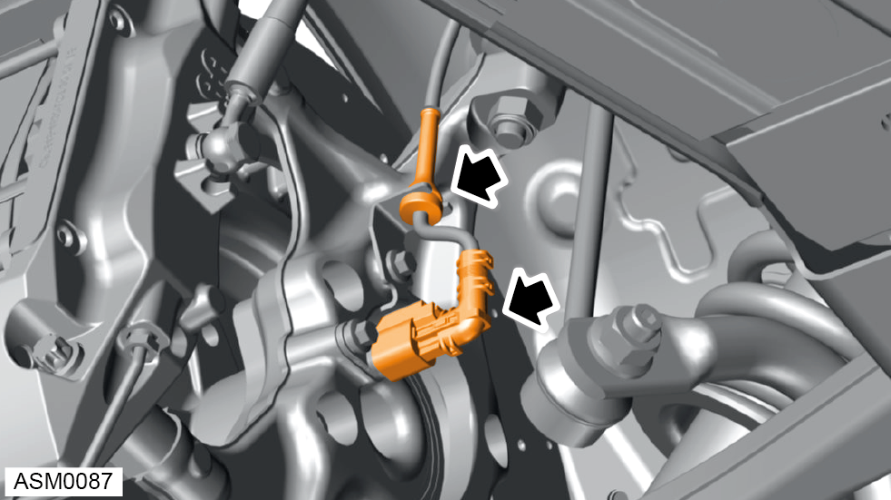
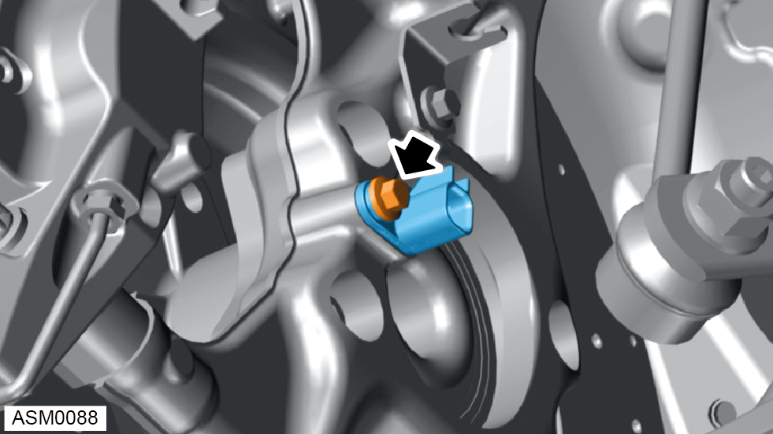

Wheel Speed Sensor - Front - Left Side - V6
Print
Operation Code: 17.06.34-02
Remove
- Remove road wheel front - left side. Refer to procedure.

- Disconnect wiring harness from harness mounting clip and wheel speed sensor.
- Move wiring harness aside.

- Remove M6x16 bolt securing wheel speed sensor to hub carrier. Torque 8 Nm.
- Remove wheel speed sensor from hub carrier.
Installation
- Installation is the reverse of removal procedure except for the following:
- Perform a diagnostic read and clear error memory using Lotus Insight tool.